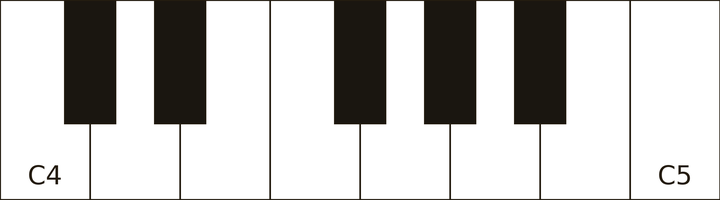
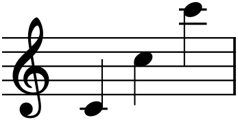
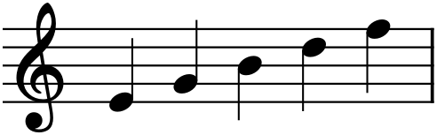
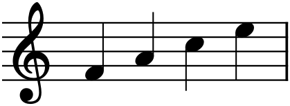
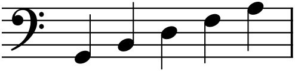
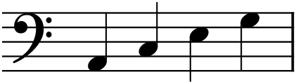
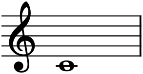
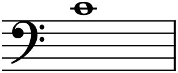
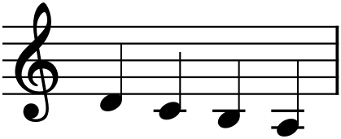
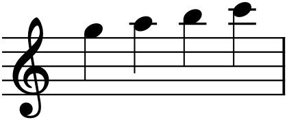

Written music is a graph. Time runs left to right; pitch runs bottom to top. Almost everything else in notation is detail hung on that one idea, and if you hold onto it — higher on the page means higher in sound, further right means later in time — the rest of this chapter is just learning the labels.
5.1The staff
The staff is five horizontal lines and the four spaces between them. A note sits either on a line (with the line running through its middle) or in a space. Move a note up one line-or-space and you have moved up one step in pitch; move it down, and down in pitch. That is the entire mechanism. The staff is a ruler for pitch, and notes are marks along it.
Five lines is not many, and music ranges far wider than nine positions. Two things extend the staff’s reach: a clef, which fixes which pitches the lines and spaces stand for, and ledger lines, little private line-segments that carry a note above or below the staff when it runs off the edge. We will meet both in a moment. First, the pitches themselves — and for those, the clearest picture is not the staff at all, but the piano keyboard.
5.2Note names and the keyboard
Western music names pitches with just seven letters: A B C D E F G. After G the names start over at A, and the whole seven-letter cycle repeats, over and over, from the lowest sounds to the highest. That repeat is not arbitrary. When you pass from one C to the next C up, you have traveled an octave, and the two notes sound so alike that we give them the same name — they are the “same note,” an octave apart. Sing “Some-where over the rainbow” and the leap on the first word is exactly an octave: two different pitches that feel like versions of one.
On a piano this is laid out in front of you. The white keys are the seven letter-names; the pattern of black keys — in groups of two and three — repeats every octave and lets you find your bearings by sight.

Because every C sounds like every other C, we need a way to say which one. The convention this book uses — the standard one, called scientific pitch notation — numbers the octaves and attaches the number to the letter. The C nearest the middle of the piano is C4, or middle C. The C an octave above is C5; the one below, C3. So a pitch name is a letter plus an octave number: A4, F3, G5.

5.3The treble clef
A clef is the symbol at the far left of every staff, and its job is to name the lines. The treble clef — the ornate one that spirals around the second line from the bottom — is used for higher instruments and voices, and for the right hand at the piano. Its spiral circles the line that stands for G4, which is why it is also called the G clef.
Once you know one line, you know them all, because the letters simply march up in order. On the treble staff, the five lines from bottom to top are E, G, B, D, F:

And the four spaces, bottom to top, spell a word — F, A, C, E:

You do not need to memorize these as facts to be recalled. You need them in the hands, and they arrive there through use: after you have entered a few dozen melodies in MuseScore, “third line is B” stops being a mnemonic and becomes something you simply see.
5.4The bass clef
Lower instruments — cello, bassoon, the left hand at the piano — would need a forest of ledger lines below the treble staff, so they use a different clef. The bass clef (the F clef) marks the line for F3 with its two dots, which straddle that line. Its lines, bottom to top, are G, B, D, F, A; its spaces are A, C, E, G.


Notice that the letters are the same seven, cycling as always; only the clef has shifted which pitch each line names. A clef is nothing more than a starting label. Change it, and every note on the staff is renamed without moving.
5.5Middle C and the grand staff
The two clefs are not two separate worlds. They meet at middle C — C4 — which sits just below the treble staff and just above the bass staff, a single ledger line away from each. Piano music stacks the two clefs into a grand staff, treble above, bass below, braced together, with middle C floating in the gap between them.


That middle C can be written two ways is worth sitting with, because it makes the abstraction concrete: notation is a description of sound, and the same sound can be described from either clef. When you play a grand staff at the piano, the two hands share that middle-C boundary, the right hand mostly reading treble, the left mostly reading bass.
5.6Ledger lines
When a melody climbs above the top line or dips below the bottom, we extend the staff one note at a time with ledger lines — short strokes drawn through or under the notehead, as if lending the note the line it needs. Middle C’s single ledger line, above, was your first; here are a few more in each direction.


Read past two or three ledger lines and counting gets slow and error-prone; this is exactly why the bass clef exists, and why, later, instruments borrow other clefs still. When a passage sprouts too many ledger lines, the notation is telling you it is written in the wrong clef.
5.7The black keys: sharps and flats
Between most of the white keys sits a black key, and those are the pitches the seven letters skip over. A black key is named by its neighbors: the key just above C is C♯ (“C sharp”) — sharp means raised by a half step, the smallest distance on the keyboard. The same black key, approached from above, is D♭ (“D flat”) — flat means lowered by a half step. One key, two names, depending on where you are coming from; the choice between them is a matter of musical spelling that Chapters 7 and 8 will make precise. A natural (♮) cancels a sharp or flat and returns you to the plain white key.
For now, simply notice on Figure 5.1 that the two-and-three grouping of black keys is what makes the keyboard legible: the two black keys are always C♯–D♯; the three are always F♯–G♯–A♯. That visual pattern is the reason a pianist can leap to the right note without looking. We will put sharps and flats to real work when we build scales in Chapter 7.
In MuseScore
Open MuseScore and start a new score (any instrument — “Piano” is a fine default). To place notes by pitch:
- Press N to enter note input mode. The cursor becomes a blue insertion marker.
- Choose a duration — press 5 for a quarter note (durations are Chapter 6’s subject; any will do for now).
- Type a letter, A–G. MuseScore places that pitch at the octave nearest the previous note.
- Nudge a note by an octave with Ctrl+↑ / Ctrl+↓, or by a step with ↑ / ↓.
- Press N again (or Esc) to leave note input.
To hear the clefs meet, enter middle C, then press Ctrl+↓ to drop it an octave and watch the notehead cross onto ledger lines. To change a staff’s clef, open the Clefs palette and double-click a clef onto the staff — the notes stay put in pitch and are simply renamed, exactly as in §5.4. Hover any note and MuseScore names it (e.g. “C4”) in the status bar at the bottom of the window.
Try it: enter the eight pitches C4 D4 E4 F4 G4 A4 B4 C5 in order and press Space to play them back. You have just entered your first scale — the subject of Chapter 7.